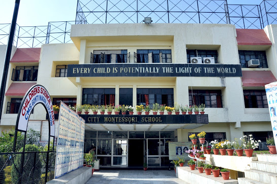
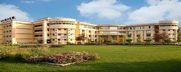

Shubham Singh

Summary
"I am a web developer skilled in creating responsive and user-friendly websites using HTML, CSS, JavaScript, and other useful frameworks
Education
- School
Class 10th : 91% from City Montessori School , Mahanagar , Lucknow.
Session : 2016 - 2018
Class 12th : 78% from City Montessori School , Gomti Nagar-I , Lucknow.
Session : 2018 - 2020

- College
Bachelor in Computer Science from Shri Ramswaroop Memorial College of Engineering & Managment
Session : 2020 - 2024

Work experience
- Worked as an Intern at Indian Railways( Northern Branch)
Skills
- HTML
- CSS
- JavaScript
- Front-End Frameworks
- Git-hub
- Browser Developer Tools
- Backend Programming
- Database Management
- Continuous Learning
- Soft Skills